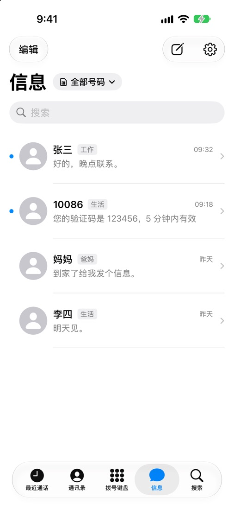
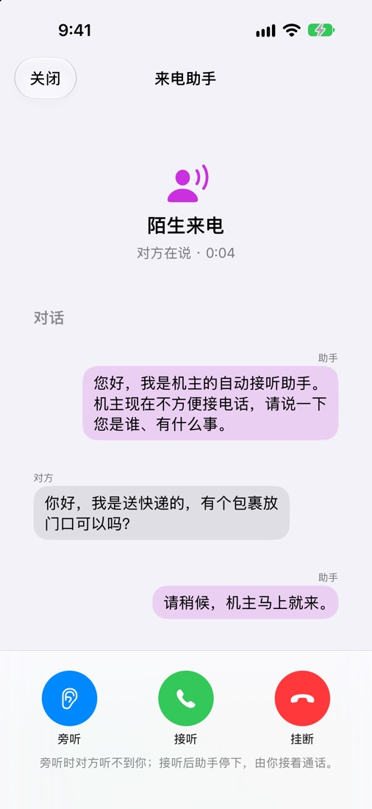
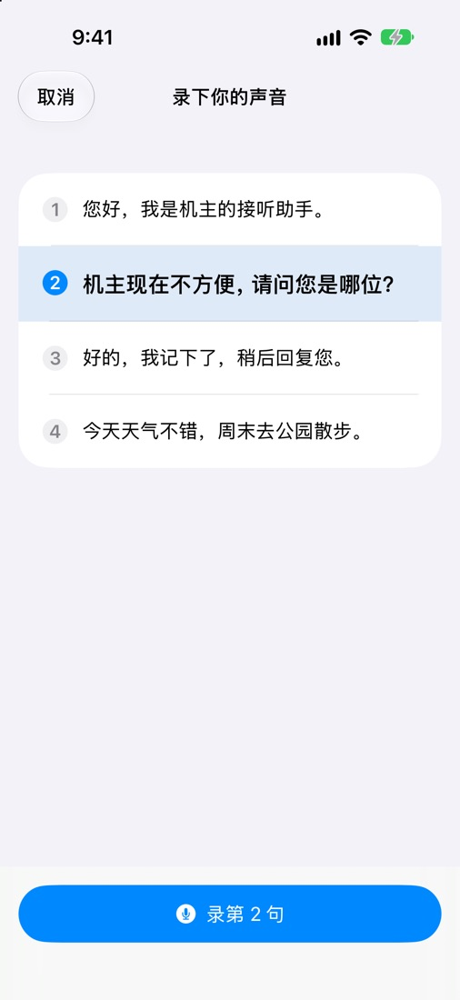
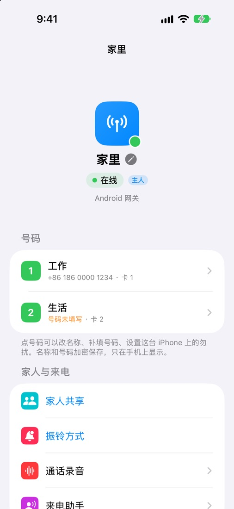

电话
来电时 iPhone 照常响铃，锁屏也能接；接完记在系统的“最近通话”里，点一下就能回拨，用的还是原来那个号码。
- 每通电话都标着是哪个号码：工作、生活、爸妈家，一眼分清。
- 通话中能看到这通电话走的是直连还是中继、延迟多少。
- 拨号键盘、按键音、静音、扬声器、蓝牙耳机都和平常一样。
- 陌生号码显示归属地，在手机本机查，不上传。
信息
短信界面接近系统自带的“信息”。几个号码的短信可以放在一起看，也可以只看一个号码。
- 验证码自动识别，一键复制。
- 按日期加载网关手机上以前的短信。
- 网关暂时不在线时，先存成草稿，可以选上线后自动发出。
- 短信在网关上加密，到了你的 iPhone 才解开。

来电助手
不认识的号码，先让助手接。它用你自己的声音说开场白，对方说的话实时变成文字出现在你的 iPhone 上。
- 你可以旁听，点一句预设回复，或者随时接过来自己说。
- 照着念四句话，网关就能用你的声音说话。
- 可以按号码开关，可以先响一会儿没人接再代接。
- 声音合成和转写都在家里的网关手机上做，不经过任何服务器。


网关和家人
家里的网关在不在线、每张卡叫什么、谁能接哪个号码，都在一页里。
- 给每张卡起名字；名字和号码加密，只在手机上显示。
- 用链接或二维码邀请家人，每个号码分别给接听、拨出、看短信、发短信的权限。
- 振铃方式：一起响、主人先响，或者指定某人先响。
- 通话录音、来电助手、自建中继，都在这里设置。

还有这些
为“人在外面、卡在家里”这件事多想了几步。
出门前检查
出门前看一眼：网关、SIM 卡、网络、直连条件、中继、电量是否都正常。
失联提醒
网关离线超过一分钟会通知你，恢复时再说一声。
桌面小组件
网关状态、号码卡片、最近通话、常用联系人、出门前检查、来电助手。
换手机不怕
新手机由旧手机批准接手；手机丢了，用恢复码或加密备份找回。
怎么开始
- 在家里那台插着 SIM 卡的安卓手机上装好网关。
- 拿到 TestFlight 邀请后，在 iPhone 上装 SimNest。
- 打开 SimNest，扫网关屏幕上的二维码。这台 iPhone 就是主人。
iPhone App 目前只对受邀的测试者开放，开放申请时会在这里说明。需要 iOS 17 或更新的系统。